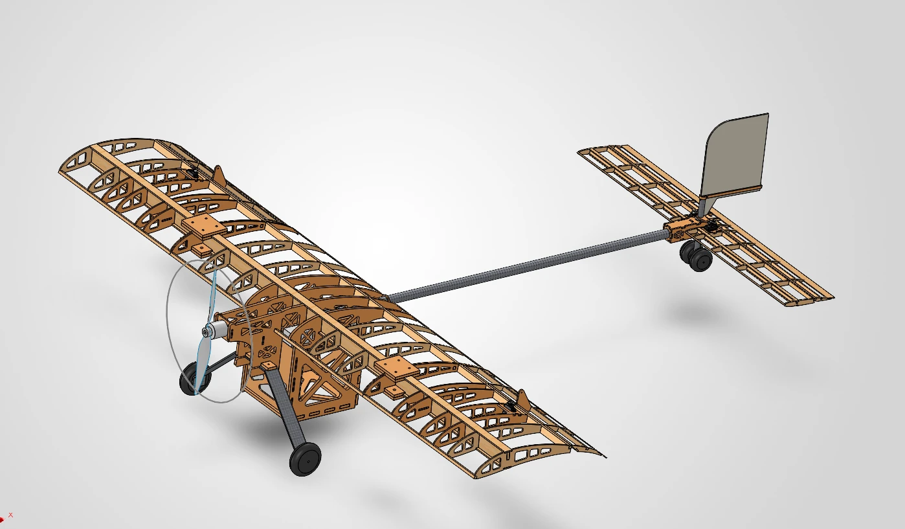

// project
SAE Aero Design Micro Class Plane
A laser-cut micro class aircraft modeled in SolidWorks for the SAE Aero Design Micro Class challenge, designed around aerodynamics, manufacturability, strength, and center of gravity.

Overview
I designed a complete 5 ft wingspan aircraft for the SAE Aero Design Micro Class challenge, taking it from aerodynamic analysis to a flight-ready SolidWorks model while meeting deadlines. The airframe is built from balsa and plywood. Plywood is used only where the loads are highest, and every part is designed for laser cutting.
Process
- Aerodynamics first. I optimized the aerodynamics in XFLR5 before modeling anything, iterating 5+ times to settle the wing geometry and overall configuration. The CAD work started from that design, which avoided major rework.
- Designed for the build. I modeled the full 5 ft airframe in balsa and plywood. Every rib, spar, and bulkhead was designed around how it would be laser cut and assembled.
- Checked after every iteration. After each iteration I went back through the whole plane, analyzed it, and checked that every part was still manufacturable. I also designed each part for assembly, so the pieces fit together into a buildable airframe.
- Lightweighting. Weight drives performance in Micro Class, so I added lightening cutouts throughout the structure to remove material without losing strength.
- Working controls. I modeled functional ailerons and elevons with their linkages, so the model is flight-ready and not just an outer shape.
- Center of gravity. I positioned the components so the center of gravity landed at the optimal spot.
Highlights
- Complete aircraft taken from analysis to buildable CAD, meeting deadlines
- Aerodynamics iterated 5+ times in XFLR5 before CAD, avoiding major rework
- Every structural part designed for laser-cut balsa and plywood
- Full manufacturability and assembly check after every iteration
- Lightening cutouts throughout to cut weight while keeping strength
- Working ailerons and elevons with linkages modeled